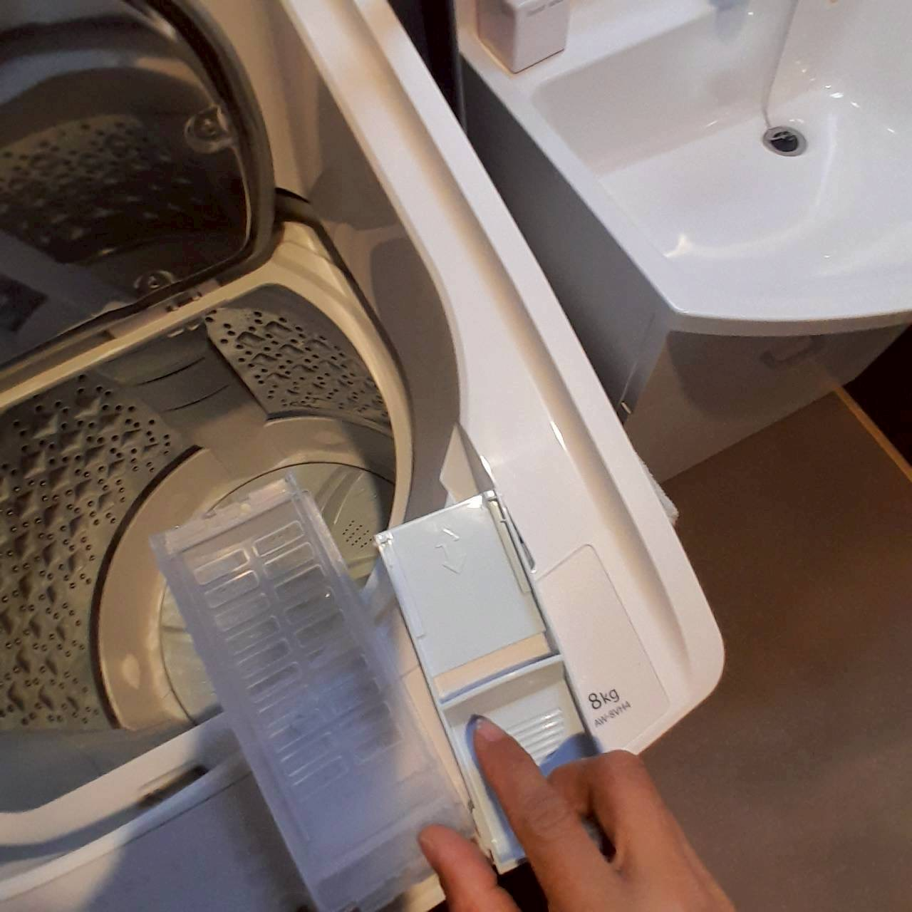
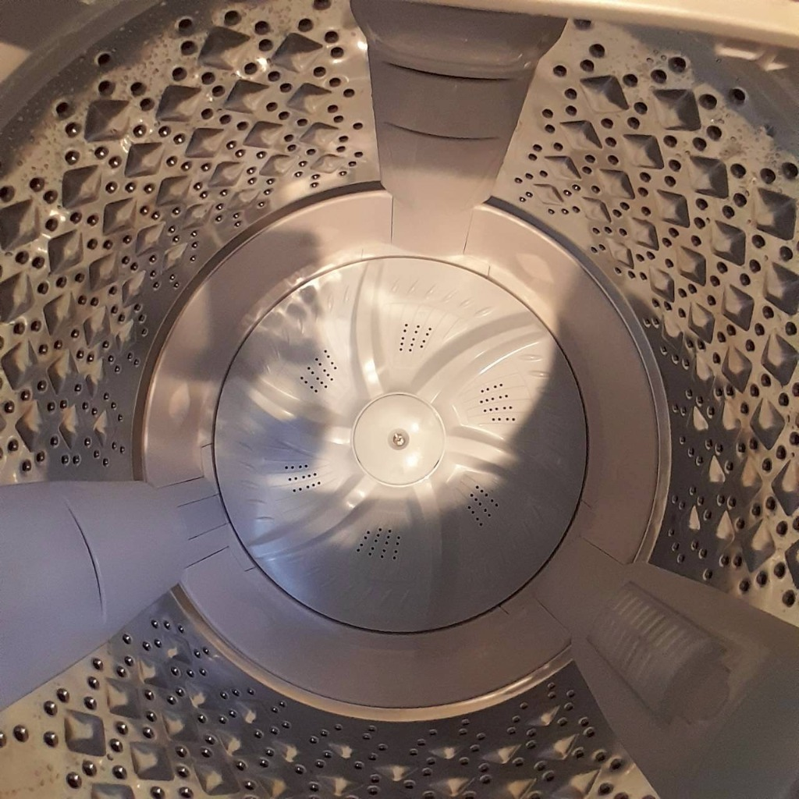
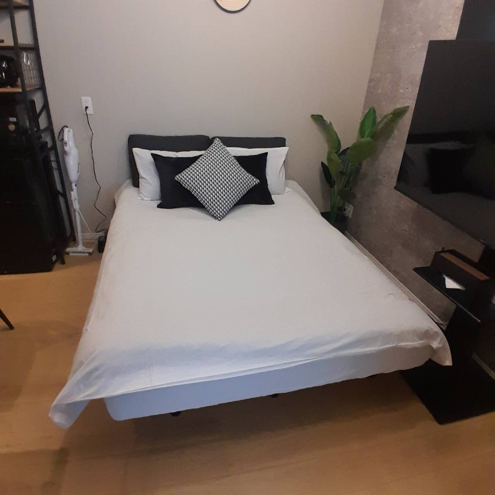
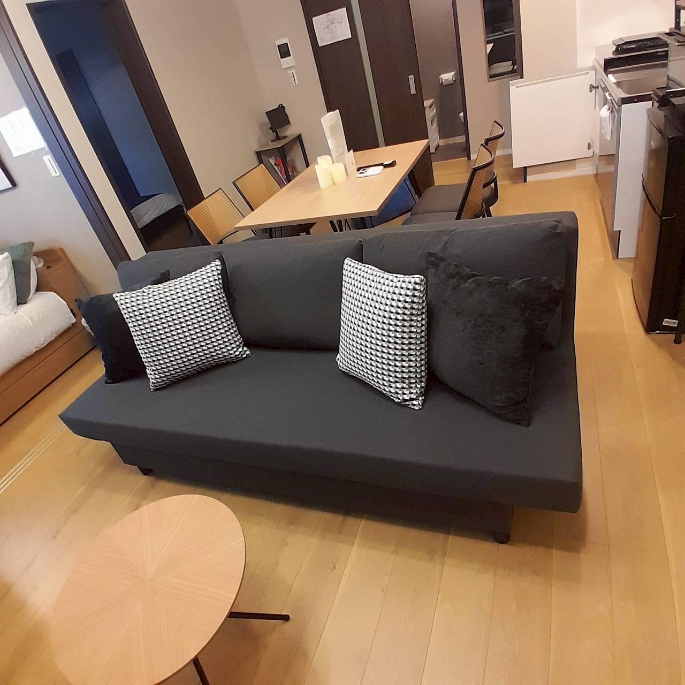
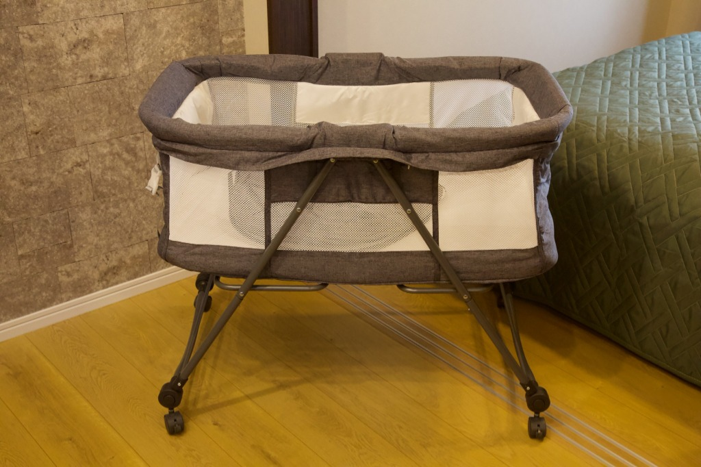

※物件特有の重要事項です。毎回必ず実施・確認してください。
【最重要】洗濯乾燥機のお手入れ・内部確認
乾燥機能の低下や故障を防ぐため、毎回必ず乾燥機のホコリ・フィルターの清掃を行ってください。また、洗濯槽内部に忘れ物やゴミがないことを確認し、糸くずフィルターのゴミも綺麗に取り除いてください。
📖 洗濯乾燥機 取扱説明書を開く (外部フォルダ)
📖 洗濯乾燥機 取扱説明書を開く (外部フォルダ)

乾燥フィルター清掃
洗濯槽・ネット確認
ソファーベッドの事前準備（予約人数に応じたセット）
【ゲストが4名以下の場合】（ソファー状態）:
ソファーベッドを展開せず、通常のソファー状態にし、クッションを綺麗に並べて整えてください。
予約時のゲスト人数に合わせて、ソファーベッドの状態を以下のようにセットしてください。
- 【ゲストが5名以上の場合】（ベッド状態）:
ソファーベッドを展開し、シーツ掛けとクッション・枕のベッドメイクを完了させてください。

5名以上：ベッド状態ソファーベッドを展開せず、通常のソファー状態にし、クッションを綺麗に並べて整えてください。

4名以下：ソファー状態
ベビー用品の設置（リクエスト時のみ）
事前にベビーベッドの利用希望（リクエスト）があった場合のみ、折りたたみ式ベビーベッドを組み立て、敷きパッド等のセッティングを行ってください。
📖 ベビーベッド 取扱説明書を開く (外部フォルダ)
📖 ベビーベッド 取扱説明書を開く (外部フォルダ)

お手本写真